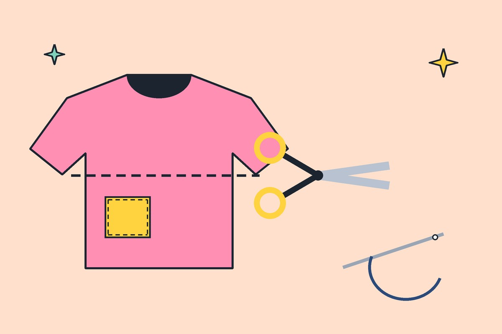

Home / Guides
Thrift Flips: Easy DIY Upgrades for Old Tees and Denim
A thrift flip means changing a secondhand piece so it fits your style better. These four need almost no skill.

1. Crop a tee
Mark the length with chalk while wearing it, lay it flat and cut in a straight line. Cotton jersey will not fray, so no hemming is needed.
2. Turn jeans into shorts
Cut a few inches longer than you want, then fold and stitch or leave a raw edge. Wash once and the edge frays softly.
3. Add patches
Patches hide holes and add personality. Use iron-on patches and stitch around the edge to make them last.
4. Swap the buttons
Replace plain buttons on a shirt or jacket with metal or wooden ones. It is a ten-minute change that makes it look new.
What you need
Fabric scissors, chalk, needle, strong thread and a pair of pins. Practise on the cheapest piece first.